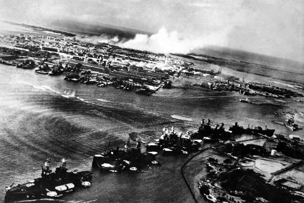

A participação dos Estados Unidos na Segunda Guerra Mundial foi um marco histórico que desempenhou um papel crucial na vitória dos Aliados sobre as potências do Eixo. O envolvimento americano começou oficialmente em 8 de dezembro de 1941, após o devastador ataque japonês a Pearl Harbor, no Havaí. Esse acontecimento chocante provocou uma rápida mobilização nacional e um forte comprometimento do país em combater as forças do Eixo.
No teatro do Pacífico, os Estados Unidos enfrentaram o Japão imperial em uma série de campanhas árduas e estratégicas. Batalhas como a Batalha de Midway, em junho de 1942, e a Campanha de Guadalcanal, que se estendeu de agosto de 1942 a fevereiro de 1943, foram decisivas na contenção e enfraquecimento do poderio japonês no Pacífico. A Batalha de Iwo Jima, em fevereiro e março de 1945, também foi um ponto crítico, resultando em uma vitória americana custosa, porém essencial, para a conquista da ilha.
No teatro europeu, os Estados Unidos desempenharam um papel determinante através do fornecimento de assistência material e militar para os países aliados. Através do programa Lend-Lease, os EUA forneceram armas, equipamentos, veículos e suprimentos para países como a União Soviética e o Reino Unido, fortalecendo consideravelmente a capacidade de luta dos Aliados europeus.
A Marinha dos EUA também teve uma contribuição fundamental na Batalha do Atlântico, protegendo comboios de suprimentos que cruzavam o Oceano Atlântico para abastecer a Europa. Esse esforço estratégico ajudou a enfraquecer a capacidade dos submarinos alemães de interromper as linhas de abastecimento e foi crucial para a sustentação das frentes de guerra europeias.
O ponto alto da participação dos Estados Unidos na guerra foi a invasão da Normandia, conhecida como o Dia D, em 6 de junho de 1944. Nessa operação gigantesca e meticulosamente planejada, as forças aliadas lideradas pelos EUA abriram uma importante frente na Europa, marcando o início da libertação do continente europeu das forças nazistas.
O compromisso e a determinação dos soldados americanos, juntamente com os esforços conjuntos dos aliados, enfraqueceram gradualmente a Alemanha Nazista. Batalhas como a Batalha das Ardenas, em dezembro de 1944, desempenharam um papel fundamental para conter o avanço alemão e preparar o terreno para a rendição incondicional da Alemanha em 7 de maio de 1945.
Enquanto a guerra na Europa chegava ao fim, os Estados Unidos concentraram seus esforços para derrotar o Japão no Pacífico. Após o lançamento das bombas atômicas em Hiroshima e Nagasaki em agosto de 1945, o Japão finalmente se rendeu em 2 de setembro de 1945, encerrando oficialmente a Segunda Guerra Mundial.
A participação dos Estados Unidos na Segunda Guerra Mundial foi uma demonstração notável de sua capacidade industrial, força militar e comprometimento com a causa dos Aliados. Esse conflito moldou o papel dos Estados Unidos como uma potência global no cenário internacional e deixou um legado duradouro na história do país. A experiência da guerra também desempenhou um papel fundamental na formação da política externa e dos compromissos internacionais dos Estados Unidos nas décadas seguintes.